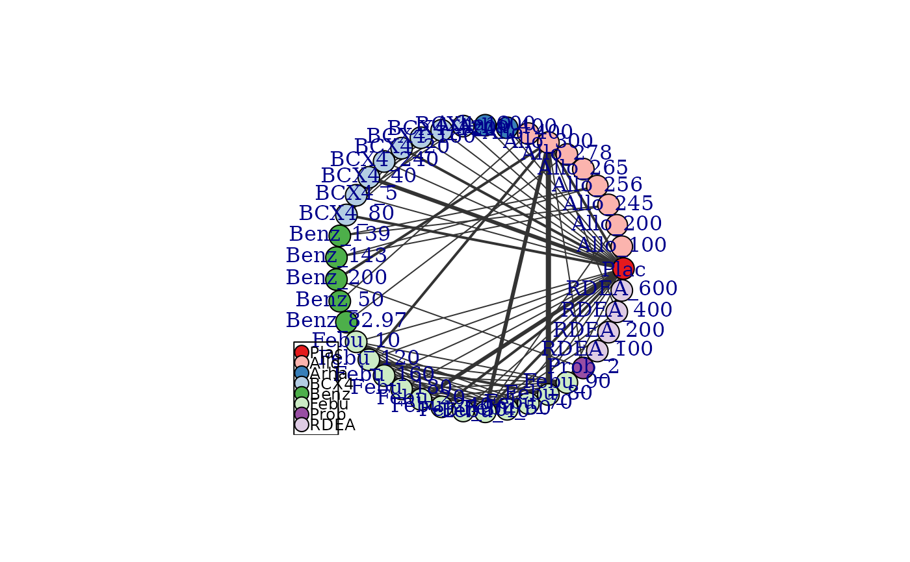

Create an mb.network object
mb.network.RdCreates an object of class("mb.network"). Various MBNMA functions can subsequently be applied
to this object.
Usage
# S3 method for mb.network
plot(
x,
edge.scale = 1,
label.distance = 0,
level = "treatment",
remove.loops = FALSE,
v.color = "connect",
v.scale = NULL,
layout = igraph::in_circle(),
legend = TRUE,
legend.x = "bottomleft",
legend.y = NULL,
...
)
mb.network(data.ab, reference = 1, cfb = NULL, description = "Network")Arguments
- x
An object of class
mb.network.- edge.scale
A number to scale the thickness of connecting lines (edges). Line thickness is proportional to the number of studies for a given comparison. Set to
0to make thickness equal for all comparisons.- label.distance
A number scaling the distance of labels from the nodes to improve readability. The labels will be directly on top of the nodes if the default of
0is used. Option only applicable iflayout_in_circleis set toTRUE.- level
A string indicating whether nodes/facets should represent
treatmentorclassin the plot. Can be used to examine the expected impact of modelling class/agent effects.- remove.loops
A boolean value indicating whether to include loops that indicate comparisons within a node.
- v.color
Can take either
"connect"(the default) to indicate that nodes should only be coloured if they are connected to the network reference treatment (indicates network connectivity) or"class"to colour nodes by class (this requires that the variableclassbe included in the dataset).- v.scale
A number with which to scale the size of the nodes. If the variable
N(to indicate the numbers of participants at each observation) is included in the dataset then the size of the nodes will be proportional to the number of participants within a treatment/class in the network at the earliest time point reported in each study.- layout
An igraph layout specification. This is a function specifying an igraph layout that determines the arrangement of the vertices (nodes). The default
igraph::as_circle()arranged vertices in a circle. Two other useful layouts for network plots are:igraph::as_star(),igraph::with_fr(). Others can be found inlayout_- legend
A boolean value indicating whether or not to plot a legend with class names if
v.color="class"- legend.x
Can be either a string or a numerical x-coordinate indicating where the legend should be plotted (see
legend).- legend.y
A numerical y-coordinate indicating where the legend should be plotted - only required if
legend.xis also a numeric co-ordinate.- ...
Options for plotting in
igraph.- data.ab
A data frame of arm-level data in "long" format containing the columns:
studyIDStudy identifierstimeNumeric data indicating follow-up timesyNumeric data indicating the aggregate response for a given observation (e.g. mean)seNumeric data indicating the standard error for a given observationtreatmentTreatment identifiers (can be numeric, factor or character)classAn optional column indicating a particular class identifier. Observations with the same treatment identifier must also have the same class identifier.nAn optional column indicating the number of participants used to calculate the response at a given observation (required if modelling using Standardised Mean Differences)
- reference
A number or character (depending on the format of
treatmentwithindata.ab) indicating the reference treatment in the network (i.e. those for which estimated relative treatment effects estimated by the model will be compared to).- cfb
A logical vector whose length is equal to the unique number of studies in
data.ab, where each element isTRUEif the study data reported is change-from-baseline andFALSEotherwise. If left asNULL(the default) then this will be identified from the data by assuming any study for which there is no data attime=0reports change-from-baseline.- description
Optional. Short description of the network.
Value
An object of class("mb.network") which is a list containing:
descriptionA short description of the networkdata.abA data frame containing the arm-level network data (treatment identifiers will have been recoded to a sequential numeric code)studyIDA character vector with the IDs of included studies.cfbA logical vector indicating which studies report change from baseline datatreatmentsA character vector indicating the treatment identifiers that correspond to the new treatment codes.classesA character vector indicating the class identifiers (if included in the original data) that correspond to the new class codes.
Details
The S3 method plot() on an mb.network object generates a
network plot that shows how different treatments are connected within the
network via study comparisons. This can be used to identify how direct and
indirect evidence are informing different treatment comparisons. Depends on
igraph.
Missing values (NA) cannot be included in the dataset. Studies must have a baseline
measurement and more than a single follow-up time (unless change from baseline data are being used).
Data must be present for all arms within a study at each follow-up time.
Examples
# \donttest{
# Create an mb.network object from the data
network <- mb.network(osteopain)
#> Reference treatment is `Pl_0`
#> Studies reporting change from baseline automatically identified from the data
# Arrange network plot in a star with the reference treatment in the centre
plot(network, layout=igraph::as_star())
# Generate a network plot at the class level that removes loops indicating comparisons
#within a node
goutnet <- mb.network(goutSUA_CFB)
#> Reference treatment is `Plac`
#> Studies reporting change from baseline automatically identified from the data
plot(goutnet, level="class", remove.loops=TRUE)
# Generate a network plot at the treatment level that colours nodes by class
plot(goutnet, v.color="class", remove.loops=TRUE)
#> Warning: The following treatments/agents are not connected to the network reference:
#> Allo_245
#> Allo_256
#> Allo_265
#> Allo_278
#> Allo_400
#> Benz_139
#> Benz_143
#> Benz_50
#> Benz_82.97

# Plot network in which node size is proportional to number of participants
alognet <- mb.network(alog_pcfb)
#> Reference treatment is `placebo`
#> Studies reporting change from baseline automatically identified from the data
plot(alognet, v.scale=2)
# }
# Using the osteoarthritis dataset
print(osteopain)
#> studyID time y se treatment arm treatname
#> 1 Baerwald 2010 0.000 6.548000 0.08613561 Pl_0 1 Placebo_0
#> 2 Baerwald 2010 2.000 5.398000 0.09317367 Pl_0 1 Placebo_0
#> 3 Baerwald 2010 6.000 4.968000 0.09969241 Pl_0 1 Placebo_0
#> 4 Baerwald 2010 13.000 4.751000 0.10850034 Pl_0 1 Placebo_0
#> 5 Baerwald 2010 0.000 6.399000 0.12738195 Na_1000 2 Naproxen_1000
#> 6 Baerwald 2010 2.000 4.029000 0.13337086 Na_1000 2 Naproxen_1000
#> 7 Baerwald 2010 6.000 3.719000 0.13861218 Na_1000 2 Naproxen_1000
#> 8 Baerwald 2010 13.000 3.968000 0.14647069 Na_1000 2 Naproxen_1000
#> 9 Baerwald 2010 0.000 6.625000 0.09003349 Na_1500 3 Naproxcinod_1500
#> 10 Baerwald 2010 2.000 4.435000 0.09258069 Na_1500 3 Naproxcinod_1500
#> 11 Baerwald 2010 6.000 4.085000 0.09645929 Na_1500 3 Naproxcinod_1500
#> 12 Baerwald 2010 13.000 4.044000 0.10175895 Na_1500 3 Naproxcinod_1500
#> 13 Bensen 1999 0.000 5.405620 0.12743652 Pl_0 1 Placebo_0
#> 14 Bensen 1999 2.000 5.020210 0.13967062 Pl_0 1 Placebo_0
#> 15 Bensen 1999 12.000 4.720889 0.15125135 Pl_0 1 Placebo_0
#> 16 Bensen 1999 0.000 5.545080 0.12875036 Na_1000 2 Naproxen_1000
#> 17 Bensen 1999 2.000 4.124826 0.13193069 Na_1000 2 Naproxen_1000
#> 18 Bensen 1999 12.000 4.267348 0.14313626 Na_1000 2 Naproxen_1000
#> 19 Bensen 1999 0.000 5.405620 0.12756608 Ce_400 3 Celebrex_400
#> 20 Bensen 1999 2.000 3.962108 0.13072450 Ce_400 3 Celebrex_400
#> 21 Bensen 1999 12.000 3.965032 0.14176423 Ce_400 3 Celebrex_400
#> 22 Bensen 1999 0.000 5.266090 0.12930813 Ce_200 4 Celebrex_200
#> 23 Bensen 1999 2.000 3.822510 0.13230924 Ce_200 4 Celebrex_200
#> 24 Bensen 1999 12.000 3.720855 0.14325486 Ce_200 4 Celebrex_200
#> 25 Bensen 1999 0.000 5.382295 0.12702820 Ce_100 5 Celebrex_100
#> 26 Bensen 1999 2.000 4.345749 0.13030080 Ce_100 5 Celebrex_100
#> 27 Bensen 1999 12.000 4.325553 0.14135801 Ce_100 5 Celebrex_100
#> 28 Bingham 2007a 0.000 6.660000 0.14375175 Pl_0 1 Placebo_0
#> 29 Bingham 2007a 2.000 5.905123 0.15295812 Pl_0 1 Placebo_0
#> 30 Bingham 2007a 4.000 5.597386 0.15878729 Pl_0 1 Placebo_0
#> 31 Bingham 2007a 8.000 5.374769 0.16812945 Pl_0 1 Placebo_0
#> 32 Bingham 2007a 12.000 5.124054 0.17621052 Pl_0 1 Placebo_0
#> 33 Bingham 2007a 0.000 6.750000 0.10499753 Ce_200 2 Celebrex_200
#> 34 Bingham 2007a 2.000 4.606352 0.10894260 Ce_200 2 Celebrex_200
#> 35 Bingham 2007a 4.000 4.270519 0.11133890 Ce_200 2 Celebrex_200
#> 36 Bingham 2007a 8.000 4.300451 0.11563667 Ce_200 2 Celebrex_200
#> 37 Bingham 2007a 12.000 4.274297 0.11895791 Ce_200 2 Celebrex_200
#> 38 Bingham 2007a 0.000 6.740000 0.10658817 Et_30 3 Etoricoxib_30
#> 39 Bingham 2007a 2.000 4.245301 0.11123171 Et_30 3 Etoricoxib_30
#> 40 Bingham 2007a 4.000 4.021748 0.11386291 Et_30 3 Etoricoxib_30
#> 41 Bingham 2007a 8.000 4.037578 0.11802862 Et_30 3 Etoricoxib_30
#> 42 Bingham 2007a 12.000 3.899251 0.12156902 Et_30 3 Etoricoxib_30
#> 43 Bingham 2007b 0.000 6.640000 0.15968999 Pl_0 1 Placebo_0
#> 44 Bingham 2007b 2.000 5.519577 0.17109473 Pl_0 1 Placebo_0
#> 45 Bingham 2007b 4.000 5.097473 0.17758313 Pl_0 1 Placebo_0
#> 46 Bingham 2007b 8.000 5.011880 0.18711207 Pl_0 1 Placebo_0
#> 47 Bingham 2007b 12.000 4.999232 0.19569508 Pl_0 1 Placebo_0
#> 48 Bingham 2007b 0.000 6.730000 0.11922685 Ce_200 2 Celebrex_200
#> 49 Bingham 2007b 2.000 4.384345 0.11363334 Ce_200 2 Celebrex_200
#> 50 Bingham 2007b 4.000 4.137306 0.11584245 Ce_200 2 Celebrex_200
#> 51 Bingham 2007b 8.000 4.022573 0.12001322 Ce_200 2 Celebrex_200
#> 52 Bingham 2007b 12.000 3.936906 0.12354571 Ce_200 2 Celebrex_200
#> 53 Bingham 2007b 0.000 6.870000 0.10520605 Et_30 3 Etoricoxib_30
#> 54 Bingham 2007b 2.000 4.465766 0.11429788 Et_30 3 Etoricoxib_30
#> 55 Bingham 2007b 4.000 4.233316 0.11672457 Et_30 3 Etoricoxib_30
#> 56 Bingham 2007b 8.000 4.089368 0.12087161 Et_30 3 Etoricoxib_30
#> 57 Bingham 2007b 12.000 4.091271 0.12433858 Et_30 3 Etoricoxib_30
#> 58 Birbara 2006_1 0.000 6.850000 0.19248710 Pl_0 1 Placebo_0
#> 59 Birbara 2006_1 2.000 5.050000 0.19825783 Pl_0 1 Placebo_0
#> 60 Birbara 2006_1 4.000 4.900000 0.20546535 Pl_0 1 Placebo_0
#> 61 Birbara 2006_1 6.000 4.740000 0.21210711 Pl_0 1 Placebo_0
#> 62 Birbara 2006_1 0.000 6.830000 0.13567477 Ce_200 2 Celebrex_200
#> 63 Birbara 2006_1 2.000 4.290000 0.13735626 Ce_200 2 Celebrex_200
#> 64 Birbara 2006_1 4.000 4.090000 0.14020133 Ce_200 2 Celebrex_200
#> 65 Birbara 2006_1 6.000 3.930000 0.14285150 Ce_200 2 Celebrex_200
#> 66 Birbara 2006_1 0.000 7.050000 0.12570054 Ro_12 3 Rofecoxib_12
#> 67 Birbara 2006_1 2.000 4.650000 0.13581507 Ro_12 3 Rofecoxib_12
#> 68 Birbara 2006_1 4.000 4.360000 0.13919061 Ro_12 3 Rofecoxib_12
#> 69 Birbara 2006_1 6.000 4.190000 0.14163496 Ro_12 3 Rofecoxib_12
#> 70 Birbara 2006_2 0.000 6.870000 0.19089880 Pl_0 1 Placebo_0
#> 71 Birbara 2006_2 2.000 4.930000 0.19254502 Pl_0 1 Placebo_0
#> 72 Birbara 2006_2 4.000 4.760000 0.19892926 Pl_0 1 Placebo_0
#> 73 Birbara 2006_2 6.000 4.590000 0.20627513 Pl_0 1 Placebo_0
#> 74 Birbara 2006_2 0.000 6.680000 0.13307692 Ce_200 2 Celebrex_200
#> 75 Birbara 2006_2 2.000 4.190000 0.13377582 Ce_200 2 Celebrex_200
#> 76 Birbara 2006_2 4.000 3.700000 0.13702105 Ce_200 2 Celebrex_200
#> 77 Birbara 2006_2 6.000 3.540000 0.13955657 Ce_200 2 Celebrex_200
#> 78 Birbara 2006_2 0.000 6.700000 0.12688825 Ro_12 3 Rofecoxib_12
#> 79 Birbara 2006_2 2.000 3.720000 0.13837981 Ro_12 3 Rofecoxib_12
#> 80 Birbara 2006_2 4.000 3.720000 0.14138984 Ro_12 3 Rofecoxib_12
#> 81 Birbara 2006_2 6.000 3.620000 0.14410240 Ro_12 3 Rofecoxib_12
#> 88 Chappell 2009 0.000 5.175000 0.11801842 Pl_0 1 Placebo_0
#> 89 Chappell 2009 13.000 3.430000 0.16255069 Pl_0 1 Placebo_0
#> 90 Chappell 2009 0.000 5.120000 0.11135620 Du_90 2 Duloxetine_90
#> 91 Chappell 2009 13.000 2.985000 0.15195876 Du_90 2 Duloxetine_90
#> 92 Chappell 2011 0.000 5.475000 0.13867505 Pl_0 1 Placebo_0
#> 93 Chappell 2011 13.000 3.880000 0.18527144 Pl_0 1 Placebo_0
#> 94 Chappell 2011 0.000 5.490000 0.16096163 Du_90 2 Duloxetine_90
#> 95 Chappell 2011 13.000 3.180000 0.17937364 Du_90 2 Duloxetine_90
#> 96 Clegg 2006 0.000 4.742000 0.08388064 Pl_0 1 Placebo_0
#> 97 Clegg 2006 24.000 3.020000 0.12785580 Pl_0 1 Placebo_0
#> 98 Clegg 2006 0.000 4.698000 0.08333074 Ce_200 2 Celebrex_200
#> 99 Clegg 2006 24.000 2.714000 0.12146325 Ce_200 2 Celebrex_200
#> 100 DeLemos 2011 0.000 6.016000 0.14637110 Pl_0 1 Placebo_0
#> 101 DeLemos 2011 1.000 4.660234 0.14174890 Pl_0 1 Placebo_0
#> 102 DeLemos 2011 2.000 4.265908 0.14423560 Pl_0 1 Placebo_0
#> 103 DeLemos 2011 3.000 3.980672 0.14662378 Pl_0 1 Placebo_0
#> 104 DeLemos 2011 6.000 3.643174 0.15307332 Pl_0 1 Placebo_0
#> 105 DeLemos 2011 9.000 3.292040 0.15809206 Pl_0 1 Placebo_0
#> 106 DeLemos 2011 12.000 3.268146 0.16279536 Pl_0 1 Placebo_0
#> 107 DeLemos 2011 0.000 5.738000 0.13523145 Ce_200 2 Celebrex_200
#> 108 DeLemos 2011 1.000 3.746574 0.13973694 Ce_200 2 Celebrex_200
#> 109 DeLemos 2011 2.000 3.284066 0.14128381 Ce_200 2 Celebrex_200
#> 110 DeLemos 2011 3.000 2.930678 0.14255246 Ce_200 2 Celebrex_200
#> 111 DeLemos 2011 6.000 2.511332 0.14627650 Ce_200 2 Celebrex_200
#> 112 DeLemos 2011 9.000 2.555680 0.14916326 Ce_200 2 Celebrex_200
#> 113 DeLemos 2011 12.000 2.545424 0.15202178 Ce_200 2 Celebrex_200
#> 114 DeLemos 2011 0.000 6.124000 0.15212591 Tr_300 3 Tramadol_300
#> 115 DeLemos 2011 1.000 4.332964 0.14113504 Tr_300 3 Tramadol_300
#> 116 DeLemos 2011 2.000 3.693184 0.14233657 Tr_300 3 Tramadol_300
#> 117 DeLemos 2011 3.000 3.230648 0.14383500 Tr_300 3 Tramadol_300
#> 118 DeLemos 2011 6.000 2.879542 0.14753666 Tr_300 3 Tramadol_300
#> 119 DeLemos 2011 9.000 2.828406 0.15064388 Tr_300 3 Tramadol_300
#> 120 DeLemos 2011 12.000 2.777240 0.15325220 Tr_300 3 Tramadol_300
#> 121 DeLemos 2011 0.000 6.058000 0.13624697 Tr_200 4 Tramadol_200
#> 122 DeLemos 2011 1.000 4.346600 0.14061110 Tr_200 4 Tramadol_200
#> 123 DeLemos 2011 2.000 3.993182 0.14238944 Tr_200 4 Tramadol_200
#> 124 DeLemos 2011 3.000 3.762492 0.14390273 Tr_200 4 Tramadol_200
#> 125 DeLemos 2011 6.000 3.302266 0.14727855 Tr_200 4 Tramadol_200
#> 126 DeLemos 2011 9.000 3.223858 0.15077558 Tr_200 4 Tramadol_200
#> 127 DeLemos 2011 12.000 3.240874 0.15337054 Tr_200 4 Tramadol_200
#> 128 DeLemos 2011 0.000 5.968000 0.14290302 Tr_100 5 Tramadol_100
#> 129 DeLemos 2011 1.000 4.701114 0.14013124 Tr_100 5 Tramadol_100
#> 130 DeLemos 2011 2.000 4.115910 0.14149865 Tr_100 5 Tramadol_100
#> 131 DeLemos 2011 3.000 3.667038 0.14301421 Tr_100 5 Tramadol_100
#> 132 DeLemos 2011 6.000 3.479538 0.14674325 Tr_100 5 Tramadol_100
#> 133 DeLemos 2011 9.000 3.605646 0.14999098 Tr_100 5 Tramadol_100
#> 134 DeLemos 2011 12.000 3.349994 0.15257853 Tr_100 5 Tramadol_100
#> 135 Enrich 1999 0.000 6.003000 0.20107522 Pl_0 1 Placebo_0
#> 136 Enrich 1999 1.000 5.643000 0.20685093 Pl_0 1 Placebo_0
#> 137 Enrich 1999 2.000 5.273000 0.20991297 Pl_0 1 Placebo_0
#> 138 Enrich 1999 4.000 5.233000 0.21850685 Pl_0 1 Placebo_0
#> 139 Enrich 1999 6.000 5.123000 0.22585766 Pl_0 1 Placebo_0
#> 140 Enrich 1999 0.000 6.436000 0.19999737 Ro_25 2 Rofecoxib_25
#> 141 Enrich 1999 1.000 4.146000 0.20356012 Ro_25 2 Rofecoxib_25
#> 142 Enrich 1999 2.000 3.646000 0.20541085 Ro_25 2 Rofecoxib_25
#> 143 Enrich 1999 4.000 3.906000 0.21037141 Ro_25 2 Rofecoxib_25
#> 144 Enrich 1999 6.000 3.576000 0.21440533 Ro_25 2 Rofecoxib_25
#> 145 Enrich 1999 0.000 5.944000 0.19953406 Ro_125 3 Rofecoxib_125
#> 146 Enrich 1999 1.000 3.484000 0.20158925 Ro_125 3 Rofecoxib_125
#> 147 Enrich 1999 2.000 3.014000 0.20390576 Ro_125 3 Rofecoxib_125
#> 148 Enrich 1999 4.000 3.124000 0.20849592 Ro_125 3 Rofecoxib_125
#> 149 Enrich 1999 6.000 2.824000 0.21260208 Ro_125 3 Rofecoxib_125
#> 150 Fishman 2007 0.000 6.014000 0.11866399 Pl_0 1 Placebo_0
#> 151 Fishman 2007 12.000 4.071478 0.13816027 Pl_0 1 Placebo_0
#> 152 Fishman 2007 0.000 6.288000 0.18951979 Tr_300 2 Tramadol_300
#> 153 Fishman 2007 12.000 3.395520 0.18848415 Tr_300 2 Tramadol_300
#> 154 Fishman 2007 0.000 5.676000 0.15796474 Tr_200 3 Tramadol_200
#> 155 Fishman 2007 12.000 3.246672 0.18748009 Tr_200 3 Tramadol_200
#> 156 Fishman 2007 0.000 5.756000 0.15528789 Tr_100 4 Tramadol_100
#> 157 Fishman 2007 12.000 3.361504 0.19021417 Tr_100 4 Tramadol_100
#> 158 Fleischmann 2005 0.000 4.950000 0.10856203 Pl_0 1 Placebo_0
#> 159 Fleischmann 2005 2.000 4.150000 0.11449208 Pl_0 1 Placebo_0
#> 160 Fleischmann 2005 13.000 3.800000 0.13292276 Pl_0 1 Placebo_0
#> 161 Fleischmann 2005 0.000 5.150000 0.07925469 Ce_200 2 Celebrex_200
#> 162 Fleischmann 2005 2.000 3.700000 0.08106751 Ce_200 2 Celebrex_200
#> 163 Fleischmann 2005 13.000 3.400000 0.08897460 Ce_200 2 Celebrex_200
#> 164 Fleischmann 2005 0.000 4.950000 0.07854096 Lu_400 3 Lumiracoxib_400
#> 165 Fleischmann 2005 2.000 3.400000 0.07952726 Lu_400 3 Lumiracoxib_400
#> 166 Fleischmann 2005 13.000 3.100000 0.08732728 Lu_400 3 Lumiracoxib_400
#> 167 Fleischmann 2005 0.000 5.150000 0.07536922 Lu_200 4 Lumiracoxib_200
#> 168 Fleischmann 2005 2.000 3.600000 0.07969604 Lu_200 4 Lumiracoxib_200
#> 169 Fleischmann 2005 13.000 3.300000 0.08726499 Lu_200 4 Lumiracoxib_200
#> 170 Gana 2006 0.000 6.118000 0.13298113 Pl_0 1 Placebo_0
#> 171 Gana 2006 1.000 5.278000 0.13368325 Pl_0 1 Placebo_0
#> 172 Gana 2006 2.000 4.846000 0.13645321 Pl_0 1 Placebo_0
#> 173 Gana 2006 3.000 4.746000 0.13873236 Pl_0 1 Placebo_0
#> 174 Gana 2006 6.000 4.576000 0.14503567 Pl_0 1 Placebo_0
#> 175 Gana 2006 9.000 4.604000 0.14996109 Pl_0 1 Placebo_0
#> 176 Gana 2006 12.000 4.634000 0.15451115 Pl_0 1 Placebo_0
#> 177 Gana 2006 0.000 5.932000 0.13584957 Tr_300 2 Tramadol_300
#> 178 Gana 2006 1.000 4.534000 0.13381126 Tr_300 2 Tramadol_300
#> 179 Gana 2006 2.000 4.076000 0.13543190 Tr_300 2 Tramadol_300
#> 180 Gana 2006 3.000 3.920000 0.13660626 Tr_300 2 Tramadol_300
#> 181 Gana 2006 6.000 3.790000 0.14032551 Tr_300 2 Tramadol_300
#> 182 Gana 2006 9.000 3.862000 0.14378647 Tr_300 2 Tramadol_300
#> 183 Gana 2006 12.000 3.854000 0.14624779 Tr_300 2 Tramadol_300
#> 184 Gana 2006 0.000 6.304000 0.13034787 Tr_200 3 Tramadol_200
#> 185 Gana 2006 1.000 5.030000 0.13379605 Tr_200 3 Tramadol_200
#> 186 Gana 2006 2.000 4.498000 0.13535877 Tr_200 3 Tramadol_200
#> 187 Gana 2006 3.000 4.300000 0.13697546 Tr_200 3 Tramadol_200
#> 188 Gana 2006 6.000 4.172000 0.14047598 Tr_200 3 Tramadol_200
#> 189 Gana 2006 9.000 4.154000 0.14352237 Tr_200 3 Tramadol_200
#> 190 Gana 2006 12.000 4.074000 0.14613323 Tr_200 3 Tramadol_200
#> 191 Gana 2006 0.000 6.164000 0.13973447 Tr_100 4 Tramadol_100
#> 192 Gana 2006 1.000 5.026000 0.13345351 Tr_100 4 Tramadol_100
#> 193 Gana 2006 2.000 4.666000 0.13494127 Tr_100 4 Tramadol_100
#> 194 Gana 2006 3.000 4.446000 0.13629561 Tr_100 4 Tramadol_100
#> 195 Gana 2006 6.000 4.114000 0.14008223 Tr_100 4 Tramadol_100
#> 196 Gana 2006 9.000 4.052000 0.14324415 Tr_100 4 Tramadol_100
#> 197 Gana 2006 12.000 4.020000 0.14598755 Tr_100 4 Tramadol_100
#> 198 Gana 2006 0.000 5.960000 0.13185418 Tr_400 5 Tramadol_400
#> 199 Gana 2006 1.000 4.678000 0.13349877 Tr_400 5 Tramadol_400
#> 200 Gana 2006 2.000 4.230000 0.13504263 Tr_400 5 Tramadol_400
#> 201 Gana 2006 3.000 3.898000 0.13645394 Tr_400 5 Tramadol_400
#> 202 Gana 2006 6.000 3.700000 0.13994609 Tr_400 5 Tramadol_400
#> 203 Gana 2006 9.000 3.708000 0.14305671 Tr_400 5 Tramadol_400
#> 204 Gana 2006 12.000 3.804000 0.14586527 Tr_400 5 Tramadol_400
#> 205 Gottesdiener 2002 0.000 7.062000 0.22216747 Pl_0 1 Placebo_0
#> 206 Gottesdiener 2002 1.000 6.362000 0.22671752 Pl_0 1 Placebo_0
#> 207 Gottesdiener 2002 2.000 6.262000 0.23247437 Pl_0 1 Placebo_0
#> 208 Gottesdiener 2002 4.000 6.052000 0.24012258 Pl_0 1 Placebo_0
#> 209 Gottesdiener 2002 6.000 5.902000 0.24781410 Pl_0 1 Placebo_0
#> 210 Gottesdiener 2002 0.000 6.756000 0.16960703 Et_30 2 Etoricoxib_30
#> 211 Gottesdiener 2002 1.000 4.796000 0.17227052 Et_30 2 Etoricoxib_30
#> 212 Gottesdiener 2002 2.000 4.416000 0.17432054 Et_30 2 Etoricoxib_30
#> 213 Gottesdiener 2002 4.000 4.476000 0.17798345 Et_30 2 Etoricoxib_30
#> 214 Gottesdiener 2002 6.000 4.106000 0.18209630 Et_30 2 Etoricoxib_30
#> 215 Gottesdiener 2002 0.000 6.854000 0.16202815 Et_90 3 Etoricoxib_90
#> 216 Gottesdiener 2002 1.000 4.134000 0.16437693 Et_90 3 Etoricoxib_90
#> 217 Gottesdiener 2002 2.000 4.084000 0.16637489 Et_90 3 Etoricoxib_90
#> 218 Gottesdiener 2002 4.000 3.914000 0.16972969 Et_90 3 Etoricoxib_90
#> 219 Gottesdiener 2002 6.000 3.794000 0.17288616 Et_90 3 Etoricoxib_90
#> 220 Gottesdiener 2002 0.000 6.686000 0.16193198 Et_60 4 Etoricoxib_60
#> 221 Gottesdiener 2002 1.000 3.866000 0.16433909 Et_60 4 Etoricoxib_60
#> 222 Gottesdiener 2002 2.000 3.616000 0.16650567 Et_60 4 Etoricoxib_60
#> 223 Gottesdiener 2002 4.000 3.576000 0.17027961 Et_60 4 Etoricoxib_60
#> 224 Gottesdiener 2002 6.000 3.406000 0.17343517 Et_60 4 Etoricoxib_60
#> 225 Gottesdiener 2002 0.000 6.873000 0.15841042 Et_5 5 Etoricoxib_5
#> 226 Gottesdiener 2002 1.000 5.823000 0.16082866 Et_5 5 Etoricoxib_5
#> 227 Gottesdiener 2002 2.000 5.343000 0.16260877 Et_5 5 Etoricoxib_5
#> 228 Gottesdiener 2002 4.000 5.203000 0.16620577 Et_5 5 Etoricoxib_5
#> 229 Gottesdiener 2002 6.000 4.823000 0.16929977 Et_5 5 Etoricoxib_5
#> 230 Gottesdiener 2002 0.000 7.009000 0.16055675 Et_10 6 Etoricoxib_10
#> 231 Gottesdiener 2002 1.000 5.599000 0.16276707 Et_10 6 Etoricoxib_10
#> 232 Gottesdiener 2002 2.000 5.079000 0.16477139 Et_10 6 Etoricoxib_10
#> 233 Gottesdiener 2002 4.000 5.239000 0.16891879 Et_10 6 Etoricoxib_10
#> 234 Gottesdiener 2002 6.000 5.219000 0.17199388 Et_10 6 Etoricoxib_10
#> 235 Kivitz 2001 0.000 5.296405 0.11365985 Pl_0 1 Placebo_0
#> 236 Kivitz 2001 2.000 4.997006 0.12490734 Pl_0 1 Placebo_0
#> 237 Kivitz 2001 12.000 4.862275 0.14493324 Pl_0 1 Placebo_0
#> 238 Kivitz 2001 0.000 5.266465 0.11587666 Na_1000 2 Naproxen_1000
#> 239 Kivitz 2001 2.000 3.896707 0.07993053 Na_1000 2 Naproxen_1000
#> 240 Kivitz 2001 12.000 3.994012 0.09000872 Na_1000 2 Naproxen_1000
#> 241 Kivitz 2001 0.000 5.416170 0.11432410 Ce_400 3 Celebrex_400
#> 242 Kivitz 2001 2.000 4.136228 0.11773760 Ce_400 3 Celebrex_400
#> 243 Kivitz 2001 12.000 4.248502 0.12824272 Ce_400 3 Celebrex_400
#> 244 Kivitz 2001 0.000 5.303890 0.11595175 Ce_200 4 Celebrex_200
#> 245 Kivitz 2001 2.000 4.046407 0.11936596 Ce_200 4 Celebrex_200
#> 246 Kivitz 2001 12.000 4.255988 0.13013062 Ce_200 4 Celebrex_200
#> 247 Kivitz 2001 0.000 5.244010 0.11372082 Ce_100 5 Celebrex_100
#> 248 Kivitz 2001 2.000 4.398204 0.15003125 Ce_100 5 Celebrex_100
#> 249 Kivitz 2001 12.000 4.495509 0.15003125 Ce_100 5 Celebrex_100
#> 250 Kivitz 2002 0.000 5.400000 0.11993228 Pl_0 1 Placebo_0
#> 251 Kivitz 2002 2.000 4.450000 0.12534348 Pl_0 1 Placebo_0
#> 252 Kivitz 2002 6.000 4.200000 0.13397271 Pl_0 1 Placebo_0
#> 253 Kivitz 2002 12.000 4.150000 0.14364307 Pl_0 1 Placebo_0
#> 254 Kivitz 2002 0.000 5.350000 0.12011743 Na_1000 2 Naproxen_1000
#> 255 Kivitz 2002 2.000 3.950000 0.12308383 Na_1000 2 Naproxen_1000
#> 256 Kivitz 2002 6.000 3.800000 0.12840184 Na_1000 2 Naproxen_1000
#> 257 Kivitz 2002 12.000 3.700000 0.13427651 Na_1000 2 Naproxen_1000
#> 258 Kivitz 2002 0.000 5.400000 0.12107291 Va_5 3 Valdecoxib_5
#> 259 Kivitz 2002 2.000 4.100000 0.12407956 Va_5 3 Valdecoxib_5
#> 260 Kivitz 2002 6.000 3.850000 0.12945933 Va_5 3 Valdecoxib_5
#> 261 Kivitz 2002 12.000 3.800000 0.13543772 Va_5 3 Valdecoxib_5
#> 262 Kivitz 2002 0.000 5.350000 0.12095716 Va_20 4 Valdecoxib_20
#> 263 Kivitz 2002 2.000 3.900000 0.12456927 Va_20 4 Valdecoxib_20
#> 264 Kivitz 2002 6.000 3.700000 0.12930072 Va_20 4 Valdecoxib_20
#> 265 Kivitz 2002 12.000 3.700000 0.13516536 Va_20 4 Valdecoxib_20
#> 266 Kivitz 2002 0.000 5.500000 0.11988167 Va_10 5 Valdecoxib_10
#> 267 Kivitz 2002 2.000 3.950000 0.12302862 Va_10 5 Valdecoxib_10
#> 268 Kivitz 2002 6.000 3.950000 0.12792257 Va_10 5 Valdecoxib_10
#> 269 Kivitz 2002 12.000 3.950000 0.13378317 Va_10 5 Valdecoxib_10
#> 270 Lehmann 2005 0.000 4.900000 0.07770287 Pl_0 1 Placebo_0
#> 271 Lehmann 2005 2.000 4.350000 0.08237490 Pl_0 1 Placebo_0
#> 272 Lehmann 2005 13.000 3.650000 0.09589396 Pl_0 1 Placebo_0
#> 273 Lehmann 2005 0.000 5.100000 0.07880393 Ce_200 2 Celebrex_200
#> 274 Lehmann 2005 2.000 3.850000 0.08116206 Ce_200 2 Celebrex_200
#> 275 Lehmann 2005 13.000 3.400000 0.08923811 Ce_200 2 Celebrex_200
#> 276 Lehmann 2005 0.000 4.950000 0.07782803 Lu_200 3 Lumiracoxib_200
#> 277 Lehmann 2005 2.000 3.900000 0.08112612 Lu_200 3 Lumiracoxib_200
#> 278 Lehmann 2005 13.000 3.350000 0.08920896 Lu_200 3 Lumiracoxib_200
#> 279 Lehmann 2005 0.000 4.950000 0.07880393 Lu_100 4 Lumiracoxib_100
#> 280 Lehmann 2005 2.000 3.750000 0.08124250 Lu_100 4 Lumiracoxib_100
#> 281 Lehmann 2005 13.000 3.250000 0.08923133 Lu_100 4 Lumiracoxib_100
#> 282 Leung 2002 0.000 6.870000 0.20939918 Pl_0 1 Placebo_0
#> 283 Leung 2002 2.000 5.530000 0.23627637 Pl_0 1 Placebo_0
#> 284 Leung 2002 4.000 5.400000 0.24560040 Pl_0 1 Placebo_0
#> 285 Leung 2002 8.000 5.160000 0.25982124 Pl_0 1 Placebo_0
#> 286 Leung 2002 12.000 5.340000 0.27087539 Pl_0 1 Placebo_0
#> 287 Leung 2002 0.000 6.564000 0.11522885 Na_1000 2 Naproxen_1000
#> 288 Leung 2002 2.000 3.974000 0.11677361 Na_1000 2 Naproxen_1000
#> 289 Leung 2002 4.000 4.034000 0.11914814 Na_1000 2 Naproxen_1000
#> 290 Leung 2002 8.000 4.034000 0.12366869 Na_1000 2 Naproxen_1000
#> 291 Leung 2002 12.000 4.084000 0.12715119 Na_1000 2 Naproxen_1000
#> 292 Leung 2002 0.000 6.491000 0.11198246 Et_60 3 Etoricoxib_60
#> 293 Leung 2002 2.000 4.041000 0.11590711 Et_60 3 Etoricoxib_60
#> 294 Leung 2002 4.000 4.021000 0.11857705 Et_60 3 Etoricoxib_60
#> 295 Leung 2002 8.000 3.901000 0.12290712 Et_60 3 Etoricoxib_60
#> 296 Leung 2002 12.000 3.801000 0.12652421 Et_60 3 Etoricoxib_60
#> 297 Markenson 2005 0.000 6.130000 0.31002201 Pl_0 1 Placebo_0
#> 298 Markenson 2005 2.142 5.830000 0.31002201 Pl_0 1 Placebo_0
#> 299 Markenson 2005 4.286 5.720000 0.31002201 Pl_0 1 Placebo_0
#> 300 Markenson 2005 6.429 5.940000 0.31002201 Pl_0 1 Placebo_0
#> 301 Markenson 2005 8.571 5.980000 0.31002201 Pl_0 1 Placebo_0
#> 302 Markenson 2005 12.857 5.980000 0.31002201 Pl_0 1 Placebo_0
#> 303 Markenson 2005 0.000 6.310000 0.27995615 Ox_44 2 Oxycodone_44
#> 304 Markenson 2005 2.142 4.830000 0.27995615 Ox_44 2 Oxycodone_44
#> 305 Markenson 2005 4.286 5.020000 0.27995615 Ox_44 2 Oxycodone_44
#> 306 Markenson 2005 6.429 4.760000 0.27995615 Ox_44 2 Oxycodone_44
#> 307 Markenson 2005 8.571 4.720000 0.27995615 Ox_44 2 Oxycodone_44
#> 308 Markenson 2005 12.857 4.940000 0.27995615 Ox_44 2 Oxycodone_44
#> 309 McKenna 2001 0.000 5.350000 0.11667262 Pl_0 1 Placebo_0
#> 310 McKenna 2001 6.000 5.350000 0.12868684 Pl_0 1 Placebo_0
#> 311 McKenna 2001 0.000 5.300000 0.10987659 Ce_200 2 Celebrex_200
#> 312 McKenna 2001 6.000 5.300000 0.12302332 Ce_200 2 Celebrex_200
#> 313 Puopolo 2007 0.000 6.466000 0.16356491 Pl_0 1 Placebo_0
#> 314 Puopolo 2007 2.000 5.236000 0.17148452 Pl_0 1 Placebo_0
#> 315 Puopolo 2007 4.000 5.186000 0.17771766 Pl_0 1 Placebo_0
#> 316 Puopolo 2007 8.000 4.686000 0.18879059 Pl_0 1 Placebo_0
#> 317 Puopolo 2007 12.000 4.716000 0.19583685 Pl_0 1 Placebo_0
#> 318 Puopolo 2007 0.000 6.646000 0.11544539 Et_30 2 Etoricoxib_30
#> 319 Puopolo 2007 2.000 4.416000 0.11860337 Et_30 2 Etoricoxib_30
#> 320 Puopolo 2007 4.000 4.146000 0.12123458 Et_30 2 Etoricoxib_30
#> 321 Puopolo 2007 8.000 3.646000 0.12544008 Et_30 2 Etoricoxib_30
#> 322 Puopolo 2007 12.000 3.656000 0.12905699 Et_30 2 Etoricoxib_30
#> 323 Sawitzke 2010 0.000 4.790000 0.14954087 Pl_0 1 Placebo_0
#> 324 Sawitzke 2010 4.000 3.420000 0.16328616 Pl_0 1 Placebo_0
#> 325 Sawitzke 2010 8.000 3.080000 0.17919315 Pl_0 1 Placebo_0
#> 326 Sawitzke 2010 16.000 2.790000 0.19864814 Pl_0 1 Placebo_0
#> 327 Sawitzke 2010 24.000 2.700000 0.20921215 Pl_0 1 Placebo_0
#> 328 Sawitzke 2010 0.000 4.660000 0.14429790 Ce_200 2 Celebrex_200
#> 329 Sawitzke 2010 4.000 3.080000 0.15170564 Ce_200 2 Celebrex_200
#> 330 Sawitzke 2010 8.000 2.630000 0.15982418 Ce_200 2 Celebrex_200
#> 331 Sawitzke 2010 16.000 2.600000 0.17277095 Ce_200 2 Celebrex_200
#> 332 Sawitzke 2010 24.000 2.140000 0.18297588 Ce_200 2 Celebrex_200
#> 333 Schnitzer 2005_2 0.000 6.600000 0.16571813 Pl_0 1 Placebo_0
#> 334 Schnitzer 2005_2 1.000 4.390000 0.17390525 Pl_0 1 Placebo_0
#> 335 Schnitzer 2005_2 2.000 4.410000 0.17768641 Pl_0 1 Placebo_0
#> 336 Schnitzer 2005_2 4.000 4.050000 0.18398436 Pl_0 1 Placebo_0
#> 337 Schnitzer 2005_2 6.000 3.970000 0.18952849 Pl_0 1 Placebo_0
#> 338 Schnitzer 2005_2 0.000 6.500000 0.15993856 Na_1000 2 Naproxen_1000
#> 339 Schnitzer 2005_2 1.000 3.450000 0.16243804 Na_1000 2 Naproxen_1000
#> 340 Schnitzer 2005_2 2.000 3.000000 0.16392544 Na_1000 2 Naproxen_1000
#> 341 Schnitzer 2005_2 4.000 2.760000 0.16789523 Na_1000 2 Naproxen_1000
#> 342 Schnitzer 2005_2 6.000 2.690000 0.17061128 Na_1000 2 Naproxen_1000
#> 343 Schnitzer 2005_2 0.000 6.700000 0.15640983 Na_1500 3 Naproxcinod_1500
#> 344 Schnitzer 2005_2 1.000 3.430000 0.16417310 Na_1500 3 Naproxcinod_1500
#> 345 Schnitzer 2005_2 2.000 3.180000 0.16645459 Na_1500 3 Naproxcinod_1500
#> 346 Schnitzer 2005_2 4.000 2.880000 0.16974660 Na_1500 3 Naproxcinod_1500
#> 347 Schnitzer 2005_2 6.000 2.730000 0.17321634 Na_1500 3 Naproxcinod_1500
#> 348 Schnitzer 2005_2 0.000 6.500000 0.16970563 Ro_25 4 Rofecoxib_25
#> 349 Schnitzer 2005_2 1.000 3.320000 0.17658562 Ro_25 4 Rofecoxib_25
#> 350 Schnitzer 2005_2 2.000 3.160000 0.17939738 Ro_25 4 Rofecoxib_25
#> 351 Schnitzer 2005_2 4.000 2.970000 0.18349812 Ro_25 4 Rofecoxib_25
#> 352 Schnitzer 2005_2 6.000 2.900000 0.18625935 Ro_25 4 Rofecoxib_25
#> 353 Schnitzer 2005_2 0.000 6.600000 0.17111236 Na_750 5 Naproxcinod_750
#> 354 Schnitzer 2005_2 1.000 3.330000 0.16997392 Na_750 5 Naproxcinod_750
#> 355 Schnitzer 2005_2 2.000 2.950000 0.17160362 Na_750 5 Naproxcinod_750
#> 356 Schnitzer 2005_2 4.000 2.840000 0.17541465 Na_750 5 Naproxcinod_750
#> 357 Schnitzer 2005_2 6.000 2.790000 0.17898501 Na_750 5 Naproxcinod_750
#> 358 Schnitzer 2005_2 0.000 6.700000 0.18336859 Na_250 6 Naproxcinod_250
#> 359 Schnitzer 2005_2 1.000 4.550000 0.17227298 Na_250 6 Naproxcinod_250
#> 360 Schnitzer 2005_2 2.000 4.170000 0.17410810 Na_250 6 Naproxcinod_250
#> 361 Schnitzer 2005_2 4.000 4.140000 0.17815403 Na_250 6 Naproxcinod_250
#> 362 Schnitzer 2005_2 6.000 3.990000 0.18131412 Na_250 6 Naproxcinod_250
#> 363 Schnitzer 2010 0.000 7.215000 0.10649083 Pl_0 1 Placebo_0
#> 364 Schnitzer 2010 2.000 5.265000 0.11319620 Pl_0 1 Placebo_0
#> 365 Schnitzer 2010 6.000 4.945000 0.12136624 Pl_0 1 Placebo_0
#> 366 Schnitzer 2010 13.000 4.655000 0.13216957 Pl_0 1 Placebo_0
#> 367 Schnitzer 2010 0.000 7.101000 0.11400775 Na_1000 2 Naproxen_1000
#> 368 Schnitzer 2010 2.000 3.871000 0.10996805 Na_1000 2 Naproxen_1000
#> 369 Schnitzer 2010 6.000 3.551000 0.11460991 Na_1000 2 Naproxen_1000
#> 370 Schnitzer 2010 13.000 3.331000 0.12044908 Na_1000 2 Naproxen_1000
#> 371 Schnitzer 2010 0.000 7.316000 0.09844550 Na_1500 3 Naproxcinod_1500
#> 372 Schnitzer 2010 2.000 4.016000 0.10918995 Na_1500 3 Naproxcinod_1500
#> 373 Schnitzer 2010 6.000 3.546000 0.11374548 Na_1500 3 Naproxcinod_1500
#> 374 Schnitzer 2010 13.000 3.596000 0.11998801 Na_1500 3 Naproxcinod_1500
#> 375 Schnitzer 2010 0.000 7.358000 0.09927747 Na_750 4 Naproxcinod_750
#> 376 Schnitzer 2010 2.000 4.628000 0.10666145 Na_750 4 Naproxcinod_750
#> 377 Schnitzer 2010 6.000 4.118000 0.11133092 Na_750 4 Naproxcinod_750
#> 378 Schnitzer 2010 13.000 3.918000 0.11741286 Na_750 4 Naproxcinod_750
#> 379 Schnitzer 2011LUM 0.000 5.300000 0.07329841 Pl_0 1 Placebo_0
#> 380 Schnitzer 2011LUM 4.000 4.420000 0.08359282 Pl_0 1 Placebo_0
#> 381 Schnitzer 2011LUM 8.000 4.255000 0.08894068 Pl_0 1 Placebo_0
#> 382 Schnitzer 2011LUM 13.000 4.140000 0.09407760 Pl_0 1 Placebo_0
#> 383 Schnitzer 2011LUM 0.000 5.400000 0.07279126 Ce_200 2 Celebrex_200
#> 384 Schnitzer 2011LUM 4.000 3.860000 0.08060813 Ce_200 2 Celebrex_200
#> 385 Schnitzer 2011LUM 8.000 3.580000 0.08354665 Ce_200 2 Celebrex_200
#> 386 Schnitzer 2011LUM 13.000 3.545000 0.08671550 Ce_200 2 Celebrex_200
#> 387 Schnitzer 2011LUM 0.000 5.400000 0.07863926 Lu_100 3 Lumiracoxib_100
#> 388 Schnitzer 2011LUM 4.000 3.880000 0.07981473 Lu_100 3 Lumiracoxib_100
#> 389 Schnitzer 2011LUM 8.000 3.585000 0.08284601 Lu_100 3 Lumiracoxib_100
#> 390 Schnitzer 2011LUM 13.000 3.585000 0.08591064 Lu_100 3 Lumiracoxib_100
#> 391 Sheldon 2005 0.000 5.500000 0.07393263 Pl_0 1 Placebo_0
#> 392 Sheldon 2005 13.000 4.350000 0.09856959 Pl_0 1 Placebo_0
#> 393 Sheldon 2005 0.000 5.400000 0.08171819 Ce_200 2 Celebrex_200
#> 394 Sheldon 2005 13.000 3.700000 0.08986899 Ce_200 2 Celebrex_200
#> 395 Sheldon 2005 0.000 5.400000 0.07813401 Lu_100 3 Lumiracoxib_100
#> 396 Sheldon 2005 13.000 3.600000 0.09022642 Lu_100 3 Lumiracoxib_100
#> 397 Sheldon 2005 0.000 5.400000 0.08077908 Lu_NA 4 Lumiracoxib_NA
#> 398 Sheldon 2005 13.000 3.550000 0.09065824 Lu_NA 4 Lumiracoxib_NA
#> 399 Sowers 2005 0.000 4.800000 0.19003495 Na_1000 1 Naproxen_1000
#> 400 Sowers 2005 6.000 3.480000 0.21001071 Na_1000 1 Naproxen_1000
#> 401 Sowers 2005 12.000 3.340000 0.23997436 Na_1000 1 Naproxen_1000
#> 402 Sowers 2005 0.000 4.280000 0.19002043 Ce_200 2 Celebrex_200
#> 403 Sowers 2005 6.000 2.970000 0.19002043 Ce_200 2 Celebrex_200
#> 404 Sowers 2005 12.000 2.780000 0.19996735 Ce_200 2 Celebrex_200
#> 405 Sowers 2005 0.000 4.850000 0.19000576 Ro_25 3 Rofecoxib_25
#> 406 Sowers 2005 6.000 3.360000 0.20001523 Ro_25 3 Rofecoxib_25
#> 407 Sowers 2005 12.000 3.180000 0.22003416 Ro_25 3 Rofecoxib_25
#> 408 Tannenbaum 2004 0.000 5.150000 0.09622504 Pl_0 1 Placebo_0
#> 409 Tannenbaum 2004 2.000 4.450000 0.11095877 Pl_0 1 Placebo_0
#> 410 Tannenbaum 2004 13.000 3.950000 0.12879815 Pl_0 1 Placebo_0
#> 411 Tannenbaum 2004 0.000 5.050000 0.07523352 Ce_200 2 Celebrex_200
#> 412 Tannenbaum 2004 2.000 3.850000 0.07727746 Ce_200 2 Celebrex_200
#> 413 Tannenbaum 2004 13.000 3.500000 0.08489279 Ce_200 2 Celebrex_200
#> 414 Tannenbaum 2004 0.000 5.000000 0.07446346 Lu_400 3 Lumiracoxib_400
#> 415 Tannenbaum 2004 2.000 3.700000 0.07649130 Lu_400 3 Lumiracoxib_400
#> 416 Tannenbaum 2004 13.000 3.400000 0.08413371 Lu_400 3 Lumiracoxib_400
#> 417 Tannenbaum 2004 0.000 5.050000 0.07703435 Lu_200 4 Lumiracoxib_200
#> 418 Tannenbaum 2004 2.000 3.750000 0.07698671 Lu_200 4 Lumiracoxib_200
#> 419 Tannenbaum 2004 13.000 3.450000 0.08442820 Lu_200 4 Lumiracoxib_200
#> 420 Williams 2001 0.000 5.300000 0.10007405 Pl_0 1 Placebo_0
#> 421 Williams 2001 6.000 4.400000 0.10007405 Pl_0 1 Placebo_0
#> 422 Williams 2001 0.000 5.050000 0.15008849 Ce_200 2 Celebrex_200
#> 423 Williams 2001 6.000 3.750000 0.10016636 Ce_200 2 Celebrex_200
# Define network
network <- mb.network(osteopain, description="Osteoarthritis Dataset")
#> Reference treatment is `Pl_0`
#> Studies reporting change from baseline automatically identified from the data
# Define network with different network reference treatment
network <- mb.network(osteopain, reference="Ce_200")
#> Studies reporting change from baseline automatically identified from the data
# Using the alogliptin dataset
network <- mb.network(alog_pcfb, description="Alogliptin Dataset")
#> Reference treatment is `placebo`
#> Studies reporting change from baseline automatically identified from the data
# Examine networks
print(network)
#> description :
#> [1] "Alogliptin Dataset"
#>
#> data.ab :
#> studyID time treatment narm arm y se n clinicaltrialGov_ID agent
#> 1 11 6 1 6 1 0.02 0.097 41 NCT00755846 alogliptin
#> 2 11 6 2 6 2 -0.12 0.095 42 NCT00755846 alogliptin
#> 3 11 6 3 6 3 -0.35 0.096 42 NCT00755846 alogliptin
#> 4 11 6 4 6 4 -0.36 0.093 45 NCT00755846 alogliptin
#> 5 11 6 5 6 5 -0.32 0.097 43 NCT00755846 alogliptin
#> 6 11 6 6 6 6 -0.31 0.094 44 NCT00755846 alogliptin
#> dose fupcount fups
#> 1 0.00 1 2
#> 2 6.25 1 2
#> 3 12.50 1 2
#> 4 25.00 1 2
#> 5 50.00 1 2
#> 6 100.00 1 2
#> [ reached 'max' / getOption("max.print") -- omitted 227 rows ]
#>
#> studyID :
#> [1] "11" "1" "3" "2" "4" "5" "6" "7" "8" "9" "10" "14" "12" "13"
#>
#> cfb :
#> [1] TRUE TRUE TRUE TRUE TRUE TRUE TRUE TRUE TRUE TRUE TRUE TRUE TRUE TRUE
#>
#> treatments :
#> [1] "placebo" "alog_6.25" "alog_12.5" "alog_25" "alog_50" "alog_100"
#>
plot(network)